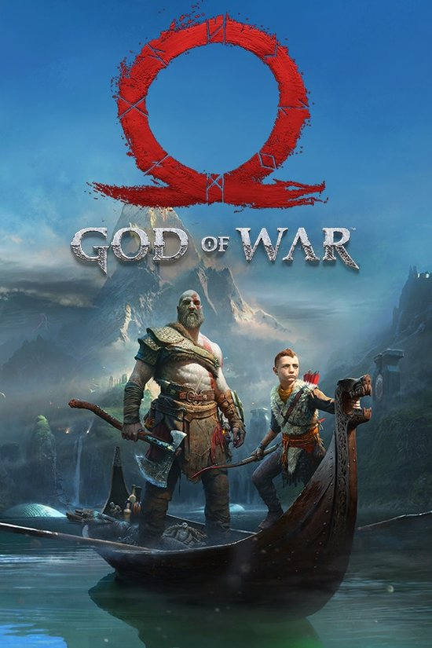
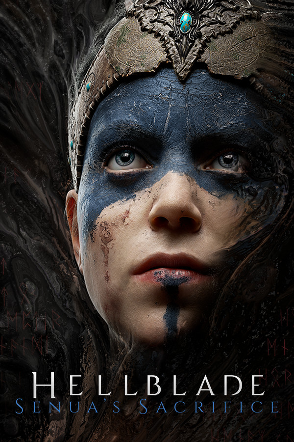

Mitología Nórdica en Videojuegos
La mitología nórdica ha inspirado muchos videojuegos. Algunos de los más conocidos son:
| Juego | Descripción | Imagen |
|---|---|---|
| God of War (2018) | Kratos y su hijo Atreus exploran la mitología nórdica enfrentando dioses y criaturas.Este título reinventa la saga de Kratos, llevándolo de la mitología griega a la mitología nórdica. Junto a su hijo Atreus, Kratos debe afrontar un peligroso viaje para cumplir la última voluntad de su esposa fallecida. En su camino, enfrentan dioses como Baldur, criaturas míticas y exploran los reinos de Midgard, Alfheim, Helheim y más. La historia destaca por su emotividad, combates brutales y un mundo rico en detalles mitológicos.
Más información sobre God of War |
 |
| Assassin's Creed: Valhalla | Un viaje épico por la era vikinga, con mitología y dioses nórdicos.Ubicado en la era vikinga, este juego permite a los jugadores tomar el papel de Eivor, un líder vikingo que busca un nuevo hogar en Inglaterra. A través de saqueos, alianzas y combates, se exploran eventos históricos reales mezclados con la mitología nórdica. En el juego, los dioses como Odín, Thor y Loki juegan un papel importante en la historia y en las visiones místicas del protagonista.
Más información sobre Assasin's Creed |
 |
| Hellblade: Senua's Sacrifice | Inspirado en la mitología y cultura nórdica con una historia oscura y profunda.Este juego combina mitología nórdica con una profunda exploración psicológica. Senua, una guerrera celta, emprende un viaje al Helheim, el reino de los muertos, para recuperar el alma de su amado. A lo largo del juego, enfrenta alucinaciones y enemigos inspirados en la mitología nórdica, en una historia inmersiva sobre la locura y el duelo. Su impresionante apartado sonoro y narrativo lo convierten en una experiencia única.
Más información sobre Hellblade |
 |